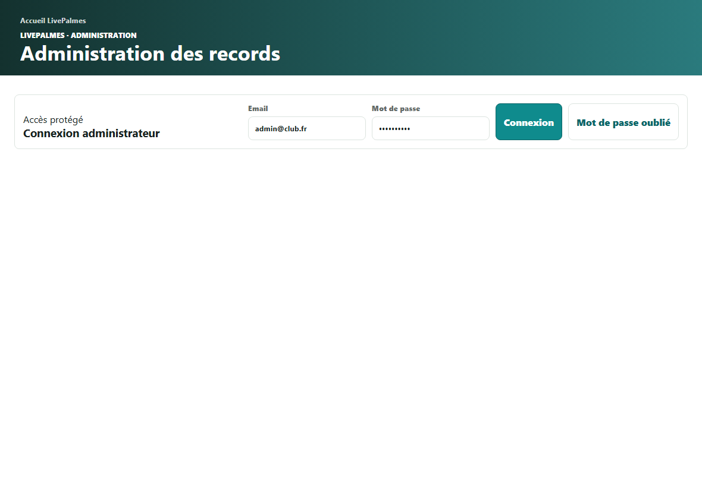
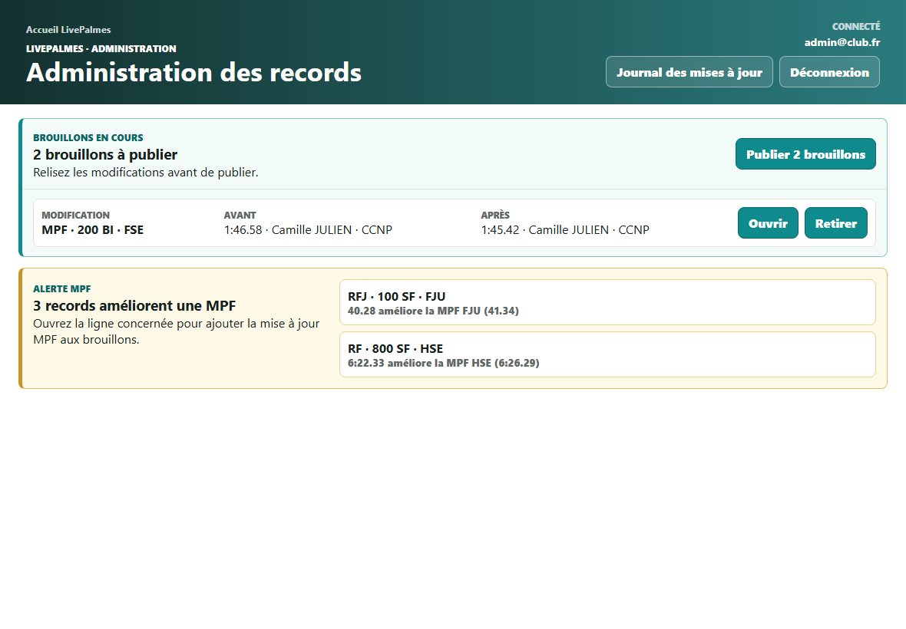
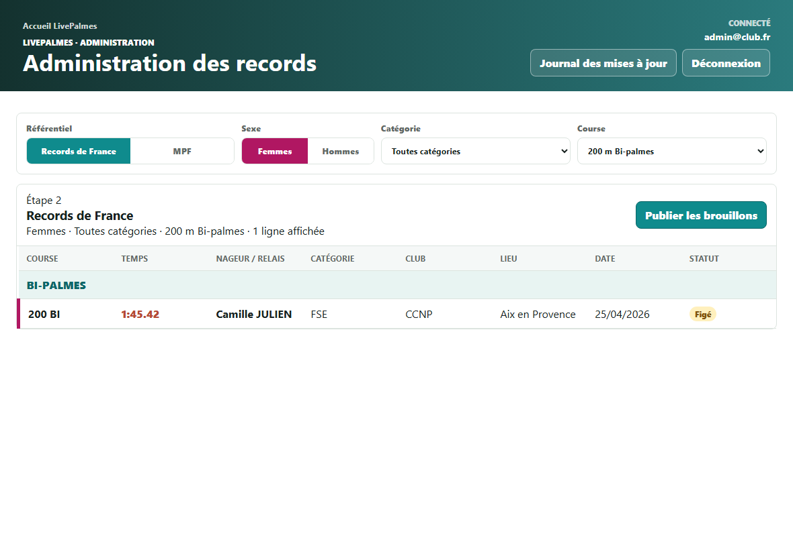
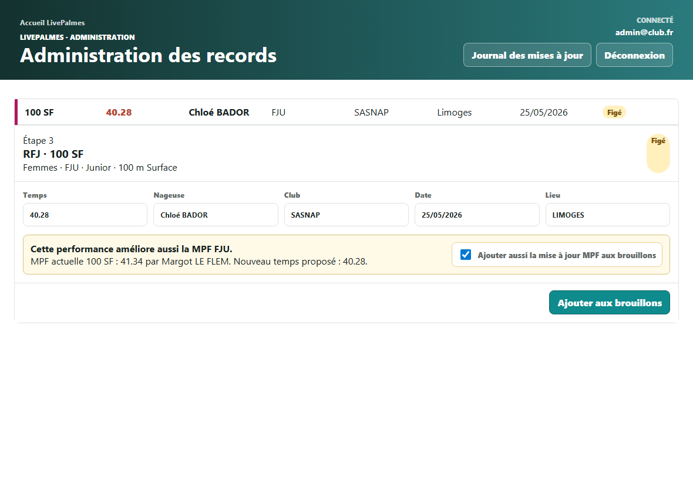
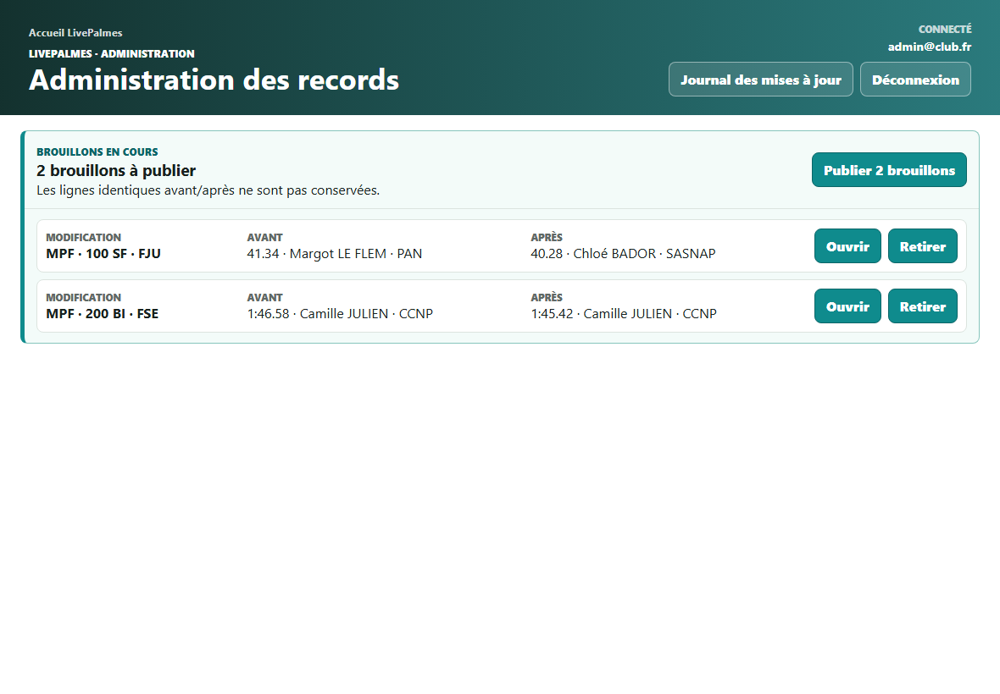
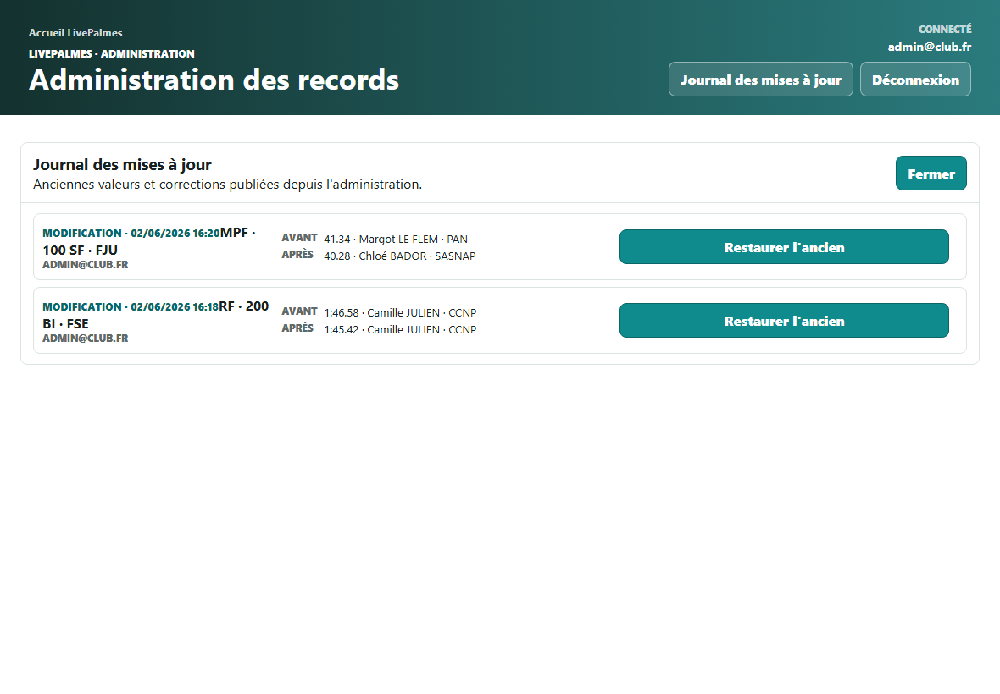

Objectif
Mettre à jour les Records de France, RFJ et MPF depuis l’administration LivePalmes.
Principe
Une modification est d’abord ajoutée aux brouillons, puis publiée après relecture.
Sécurité
Le journal des mises à jour conserve les 50 dernières modifications publiées.
1. Accéder à la page d’administration
- Ouvrir
https://livepalmes.web.app/administration.html, puis choisir Records / MPF. - Saisir l’adresse email administrateur.
- Saisir le mot de passe.
- Cliquer sur Connexion.
Si l’accès ne fonctionne pas, vérifier que le compte possède bien les droits administrateur Firebase/LivePalmes.

2. Se repérer après connexion
Après connexion, le bandeau vert affiche le compte connecté, le bouton Journal des mises à jour et le bouton Déconnexion.
- Brouillons en cours apparaît uniquement quand des modifications sont prêtes à publier.
- Alertes MPF apparaît quand un RF ou RFJ améliore une MPF.
- Les alertes MPF permettent d’ouvrir directement le record concerné.

3. Rechercher le record ou la MPF à modifier
- Choisir Records de France ou MPF.
- Choisir le sexe quand il est demandé.
- Choisir la catégorie.
- Choisir éventuellement une course pour réduire la liste.
- Cliquer sur la ligne à modifier.
Pour les MPF relais masters mixtes, le sexe n’est pas à choisir : les relais sont mixtes.

4. Modifier une ligne
- Cliquer sur le record ou la MPF à modifier.
- Corriger le temps, le nom, le club, la date ou le lieu.
- Cliquer sur Ajouter aux brouillons.
Le clic sur Ajouter aux brouillons ne publie pas encore la modification. Elle reste en attente dans le bloc Brouillons en cours.

5. Cas particulier : un RF ou RFJ améliore une MPF
Si un Record de France ou RFJ améliore aussi une MPF, l’administration affiche une alerte.
- Cliquer sur l’alerte MPF.
- Vérifier la ligne ouverte.
- Cocher Ajouter aussi la mise à jour MPF aux brouillons si la MPF doit être corrigée.
- Cliquer sur Ajouter aux brouillons.
Si le RF/RFJ n’a pas changé, il n’est pas conservé en brouillon. Seule la MPF réellement modifiée est ajoutée.
6. Relire les brouillons avant publication
Le bloc Brouillons en cours liste toutes les modifications qui seront publiées.
- Avant indique l’état actuel.
- Après indique la future valeur.
- Ouvrir permet de revenir sur la ligne.
- Retirer enlève la modification des brouillons.
Après relecture, cliquer sur Publier X brouillons.

7. Consulter le journal des mises à jour
Le bouton Journal des mises à jour est dans le bandeau vert, à côté de la déconnexion.
- Le journal conserve les 50 dernières modifications publiées.
- Chaque ligne indique l’ancienne valeur et la nouvelle valeur.
- Restaurer l’ancien remet l’ancienne valeur en brouillon, sans publier immédiatement.

8. Points de contrôle avant publication
- Vérifier que le temps est au bon format.
- Vérifier le nom de la nageuse, du nageur ou du relais.
- Vérifier le club, le lieu et la date.
- Vérifier les éventuelles alertes MPF.
- Relire le bloc Brouillons en cours avant de publier.